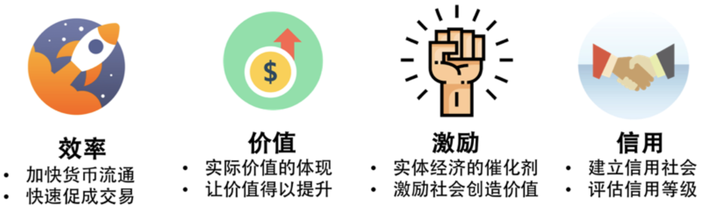

5 区块链技术传统金融和虚拟货币
1 金融的本质
我想讲金融的本质。我个人认为金融行业最大的本质就是——促进交易完成，实现价值提升！ 也就是说，如果整个社会的交易能够更快更高效更安全地完成，那么我们这个社会就会有更好的运作效率，更低的成本，更多的价值。这对于促进整个社会的经济发展是相当关键的。
所以，为了保进交易完成，金融行业需要解决下面几个问题。
- 交易中的信用问题。所以，银行会来作中间人来担保。
- 交易中的资金不足的问题。通过借贷来让交易完成。
- 交易中的大额的问题。把一个大额的金融事件以股份的方式拆碎进行大众投资。
总之，金融行业就是要促进社会的交易，使得这个社会的交易越来越活跃，从而可以产生更多的价值。那么，这个社会的经济就会越来越健康。
下图给出了金融业的四个重要属性。

- 效率提升：加快货币、股票、债券的流通性，快速地促成交易。
- 价值提升：通过金融产品的流通性，让实际价值得到充分地体现，并升值。
- 激励机制：为实体经济添砖加瓦，并激励社会持续付出和成长。
- 信用评级：建立信用社会、评估信用等级，从而改善社会。
2 经济运作的原理
经济是什么。对于经济来说，说白了就是整个社会的交易。每个交易中，对于买方，其需要付出的是货币和信用，对于卖方，其需要支付的是商品、服务或金融资产。而支出方是整个经济的驱动力。也就是说，一个社会的最基本的经济活动是交易，而经济状况好的好坏是受支出方影响的。
所以，一个市场的好坏，和支出方有很大关系。在整个社会运作的过程中，需要有一个 " 贷款机构 "。这些机构把钱贷给想要花钱且有偿还能力的人，然后这会增加整个社会的支出。于是，你的支出成为了别人的收入，别人的收入多了，也会增加他的支出，而如果支出越来越多，某些人的收入就越来越多。
于是这些人的钱花不完，他们就会开始想用钱来生钱。于是就有更多的人借钱给别人。也就是我们所说的投资，而这又增加了更我的支出 。于是，整人个社会就运作起来了。所以说，支出是经济的原动力。
我们知道，经济的价值是可能通过提高 " 生产率 " 来提高的。然而，生产率并不是很容易能提高的，这是一个长期的过程。而通过 " 借贷 " 我们可以短期的提高经济价值，在借贷发生时，消费超过产出，在还贷时，消费低于产出。
所以，整个人类世界的影响经济波动的东西就是 " 借贷 "，也就是为了购买现在买不起的东西，向未来的自己去借钱，或是由未来的自己去还债。这种未来消费的方式并不一定是坏事。如果能还了，就是良性，如果还不了了，那就成了恶性的。
就成了恶性的。
另外，还有一个问题，如果整个社会的支出变多，于是就会出现一片繁荣的情况。大多数人都是目光短浅的，所以，大多数人都觉得经济形势很好，于是就出现更多的借贷。人们觉得挣钱好容易，于是就借钱来买其他金融产品，导致金融产品上涨，于是导致大家觉得应该花更多的钱来投资，那样就会借更多的钱……这样一来，就会出现巨大的泡沫……
3 虚拟货币
首先，如果虚拟货币想要有货币的特征，那么就需要何持其稳定。这个稳定不仅仅只是不增发（在你看过上述的经济活动的原理，你知道增发货币并不一定是个坏事），其价值最好是稳定的，因为其要代表某种经济体的稳定性。这就好像美金、欧元、英镑，要比非洲某些国家的货币更硬一些。然而，目前的虚拟货币没有一个经济体以后面为其背书，所以其远远达不到货币的功能。
于是，虚拟货币开始变成股票一样的，股票是需要后面实体的公司经营情况来背书的，所以流通性比较好的股票，一般来说需要透明公开公司的经营情况，并会受到行情和政策的影响。然而虚拟货币的交易所市场完全在售卖概念，到目前为止还没有一个真正成功的，能够有颠覆性的项目。然而，其靠发布白皮书就可以变成一个几十亿规模的公司。
当然，现在区块链里的经济，是靠二级市场撑着。所以，就像前面说的那个经济规律一样，只要有不停的支出，就会造就一种繁荣的景象。这种繁荣的景象，对于绝大多数不明真相的人来说是很容易让他们心动的，因为人性是想不劳而获且趋利避害的。于是就会引发更多的人进入，于是形成更大的繁荣。
但是，这种后台没有价值体现的玩法，总有一天会达到瓶颈的——就是 " 支出 " 不再能够维持下去的时候。也就是没有新人入场的时候，老人因为钱投进去了，也不会再有更多的钱投入的时候。那个时候就是泡沫破灭的时候。
4 虚拟货币其他的一些问题
4-1 比特币的几个问题
我们先来看几个比特币的问题，了解了这些问题后，我们才能独立思考后面的几个逻辑问题。
- 交易成本上升。由于工作量证明需要消耗大量的算力，同时比特币大约 10 分钟才会产生一个区块，区块的大小只有 1MB，仅仅能够包含三四千笔交易，平均下来每秒只能够处理 5~7（个位数）笔交易，所以比特币网络的拥堵状况非常严重。有时候，一笔交易确认的小费已经很高了（并不见得比银行便宜），另一方面，确认时间很长，在拥塞的时候需要好几天。
- 个人无法参与。一条链已经非常长了，所以个人电脑已经跑不动了。也就是说，如果你想玩比特币，你电脑的算力都很难校验账本了。另外，记账的人也越来越趋于巨大的大公司。本来是一个全民参与的去中心化的事儿，而现在成了大众无法参与的事了。那么，这还是去中心化吗？
- 社区的利益纷争。上述两个比特币的技术问题必需急待解决，比特币才能玩下去，不然，也就是这一两年比特币也就快玩完了。所以，社区内也很迫切地想解决这两个技术问题。然而，自从中本聪把所有的工作交给比特币的核心团队（core team）并消失之后，比特币社区中就这些技术问题如何解决，核心团队和矿工的谈判就没有谈好过。你可以看到，其中的利益纷争和中心化的组织结构没什么两样。（具体你可以参看这篇文章《金融史上的神奇怪胎：比特币扩容大战的前世今生 》。）
作为标杆数字货币，比特币姑且这样，何况其他数据货币呢？但是你要解决这个问题，就会像前面那样所说的那样，你就需要适当地去 " 去中心化 " 了。
4-2 几个逻辑问题
- 技术驾驭能力问题。这种去中心化的技术难题并不是什么人都能 Hold 得住的，一方面是结点是不可信任的假设，另一方面，其中有太多的政治上的博弈问题不是技术能解的。所以，那些说用区块链来解决各种业务问题并颠覆现有大公司的人或公司，我觉得他们无论是在业务上还是技术上的水份都很大，更别说颠覆了。思考问题：这是不是一个概念炒作远远大于实际能力的乌托邦？
- 比特币颠覆了什么？ 有人说：“比特币本来应该要证明一个真正的自由市场力量，结果却充满了诈骗者、投机者和小偷，而且对真实世界的交易没有帮助，还消耗了这么多的社会资源”。本来，中本聪想通过比特币来建立一个可以避开政府、银行家和企业的支付系统，从而避免通货膨胀或金融腐败。但相反的是，比特币现在是一堆快速膨胀的投机泡沫，其创造了另一个和传流世界一样的金融体系。思考问题：数字货币是在颠覆现有的传统金融体系，还是建立另外一个一模一样，但充满更多泡沫和投机的体系？
- 是否消除了中间商？ 如今比特币已有各种不同类型的中间商，像是能帮用户把零碎比特币存储成账户的钱包服务等。这些中间商的存在却也破坏了比特币的隐私特性，像 Coinbase 这种中间商就会搜集跟用户有关的大量信息。这并不能怪罪中间商的贪婪，而是因为比特币本身的设计让交易变得非常复杂。对非技术背景的使用者来说，如果没有中间商或应用程序简化，使用比特币还是不太便利。思考问题：比特币的原意是建立一种无需银行和中间商，不会有交易费用的交易系统，但现在比特币的进展却反过来复制了原本想破坏的体系。
- 大公司参与的区块链？ 看到像投资银行高盛或是中介机构蚂蚁金融这样的公司参与到区块链这个事来？你有没有觉得，有点奇怪？我还看到有些人评论到：“区块链就是需要大公司来参与”。看到这，我不知道中本聪会怎么想？反正我感觉有很强烈的喜感。思考问题：区块链本质上是要颠覆这些银行和中间商的，代表了先进的生产关系，而这些传统的落后的生产力来玩这个事，是不是有点像，我造了一列火车，而要用这些马车来拉……
- 投资人投资去中心化的公司？ 我有点不明白，为什么投资人或是投资公司会关注这个事？如果投资人看到了去中心化这个事可以颠覆现有的大公司，所以看好这个事。于是把钱投给了去颠覆中心化的大公司的这些公司，而这些公司又会成为中心化的大公司。这看起来好奇怪啊。因为真正的去中心化是完全找不到主体的。思考问题：去中心化需要有公司吗？有公司的话，还能叫是去中心化吗？投资人并不傻，那么，他们想来这里面干点什么呢？是投机吗？
- 有挣大钱的机会，你会共享出来？传销组织的三个阶段：
- 第一，让你觉得你很穷困，告诉你致富的捷径。
- 第二，模糊掉具体细节，用各种高大上的类比和比喻来取得你的信任。
- 第三，通过发展下线来制造虚假繁荣，让你信以为真。所以，虚拟货币中绝大多数都是这样的特征。他们和骗子们所有的技巧如出一辙——“我有一个挣大钱的机会，但是我想和你共享出来，只需要你对我投资一点钱，未来你可以得到百倍的分红”。我靠，可能挣大钱的事，你愿意分享给这么多人？思考问题：在区块链中你有没有发现这样的身影？为什么他们要把这样超级革命性的可以挣大钱的项目在这么早的时候就分享给这么多人？